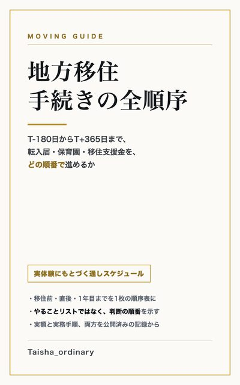

当ブログの運営者（Taisha_ordinary）がKindleで出している本は2冊です。1冊目は、移住の前から直後までの手続きを「どの順番で進めるか」に絞った実務ガイド。2冊目は、移住したあとの3年間に何が起き、何を見積もり損ね、何が効いたのかを、実額と判断の順にまとめた記録です。扱う範囲が重ならないように分けてあり、どちらもKindle Unlimitedの対象です（2026年11月時点）。
※このページには、Amazonアソシエイトのリンク（広告）が含まれます。
どちらから読むか
- これから移住を考えている・準備を始めたなら、1冊目『地方移住 手続きの全順序』。転入届・保育園・移住支援金・引っ越し業者・固定費の見直しを、引っ越し当日を基準にした工程表で並べています。
- 移住したあとの生活費や資産がどう動くのかを知りたいなら、2冊目『資産形成の途中で、金沢に移住した』。家賃・生活費・車・雪国の冬・東京との往復・資産の推移を、一世帯の3年分の記録として読めます。
2冊目は移住の手続きの手順を扱っていません。手続きの順序は1冊目で扱っています。

どんな本か
東京圏から地方都市へ、賃貸で移る子育て世帯のための「移住手続きの順序書」です。転入届、保育園の申込、移住支援金、引っ越し業者、固定費の見直し。バラバラに存在する情報を、引っ越し当日（T）を基準に、T-180日からT+365日までの1枚の工程表に並べ直しました。読み終えたときに手元に残るのは、「自分の移動日に対して、何をいつまでに決めておくか」を書き込める順序表です。
本書の中身
- 通しスケジュール表：移住の全工程を7つのフェーズに分け、T-180日からT+365日まで一枚に。各フェーズに「出口条件」付き
- 順序を決める4つの判断軸：法定期限、放置コスト、現地依存度、不可逆性
- 「実質家賃」の算式：管理費・駐車場・町内会費・更新料の月割などを含めて住まいを比べる方法
- 移住予算の4区分：運送費、住居初期費用、設備・買い替え、気候対応の初期装備
- 転入届と同じ日に束ねる手続きと、後日に分けてよい手続きの切り分け
- 固定費の見直しの順序とカレンダー（通信、自動車保険、生命・医療保険、火災保険）
- 各章末のチェックリスト13本と、付録A〜E（記入式の予算表・業者比較表・制度の確認先一覧など）
こんな人に
- やることリストは作ったが、どれから手を付ければいいのか分からない
- 転入届・保育園・移住支援金の期限が、自分の移動日に対してどう並ぶのか見えない
- 引っ越し費用の見積もりから、何が抜け落ちやすいのかを知りたい
- 移住後の固定費を、いつ、何から見直せばよいのか知りたい
- 積雪地・寒冷地への移住を検討している（著者が暮らした経験があるのは積雪地です）
対象は、東京圏から地方都市へ賃貸で移る会社員の子育て世帯です。住宅の購入手続き、小中学校の転校手続き、自営業・フリーランスの移住、単身・高齢者・ペット同伴の移住、農業・地域おこし協力隊型の移住は扱っていません。制度・金額は執筆時点のもので、年度や自治体によって変わります。手続きの前に、自治体や所管機関の最新の公式情報で確認してください。
章構成を見る
- 序章 順序を間違えた当事者が、順序表を作った理由
- 第1章 移住の全工程を1枚に：T-180日からT+365日まで
- 第2章 順序を決める4つの判断軸
- 第3章 移住先を決める：合格ラインの設定と下見の設計
- 第4章 住まいを決める：「実質家賃」で比較する
- 第5章 お金の段取り：移住予算の4区分と支援制度
- 第6章 引っ越し業者の選定：概算→絞り込み→詳細確認
- 第7章 役所手続きの実行順：転入届と同じ日に束ねるもの
- 第8章 ライフラインと生活インフラの立ち上げ
- 第9章 子ども・医療・保育の手続き
- 第10章 固定費の再設計：移住は見直しの最大の機会である
- 第11章 1年目の季節費用を予算化する
- 第12章 定着：制度・契約・関係のメンテナンス
- 終章 手続きが終わったあとに残るもの
- 付録A〜E
どんな本か
FIREの目標に届く前に、東京から金沢へ移った一世帯の、3年分の実額と判断の記録です。家賃、生活費、車、雪国の冬、東京との往復、子育て、フルリモートの孤独、転職、そして資産。移住のあとに何が起き、何を見積もり損ね、何が効いたのかを、時系列と判断の順に並べ直しました。
この本でわかること
- 東京から金沢へ移って家賃が下がったあと、生活費全体はどう変わったか
- 車を持つ場合と手放す場合の年間の比較
- 雪国の冬にかかった費用と、体感と集計のずれ
- フルリモートなら不要と思っていた、東京往復の費用
- 移住前から現在までの世帯資産の推移と、目標を引き上げた理由
- 移住のデメリットを「お金で済んだもの／済まなかったもの」に仕分ける方法
こんな人に
- FIREの目標額に届く前に移住するかどうか、迷っている
- 地方移住のあとの生活費・車・冬の費用を、一世帯の実額で確かめたい
- フルリモートで地方に移ったあとの、東京との往復や孤独の話も知っておきたい
- 移住のデメリットを、お金で解決できるものとできないものに分けて考えたい
本書の金額は、すべて一つの世帯の実績値、または本文で断ったモデルの数字で、相場ではありません。投資・税・保険の助言ではありません。移住の手続きの手順は扱っていません（1冊目で扱っています）。
章構成を見る
- 序章 貯めてから移住、ではなかった
- 第1章 下見で見たもの、見落としたもの
- 第2章 生活費は月いくらになったか
- 第3章 車は持つか、手放すか
- 第4章 雪国の冬にかかったお金
- 第5章 東京との距離は、交通費で払っている
- 第6章 子育ての費用と、つながり
- 第7章 フルリモートの孤独と、友人づくり
- 第8章 仕事：転職4回と、移住の順番
- 第9章 資産はどう動いたか
- 第10章 3年目の仕分け：お金で済んだもの、済まなかったもの
- 終章 季節が一巡して見えたこと
- 付録 3年分の数字の一覧表
ブログで読める関連記事
本の内容の一部は、ブログ記事でも読めます。
- 1冊目に近い記事：地方移住でやることの順番／地方移住の役所手続きの順番／引越し費用50万円の内訳
- 2冊目に近い記事：貯めてから移住、ではなかった理由／金沢移住の生活費の内訳／移住3年の資産推移
- 自分の数字で試算したい方は、無料のFIREシミュレーターやFIRE試算Excelキットもどうぞ。